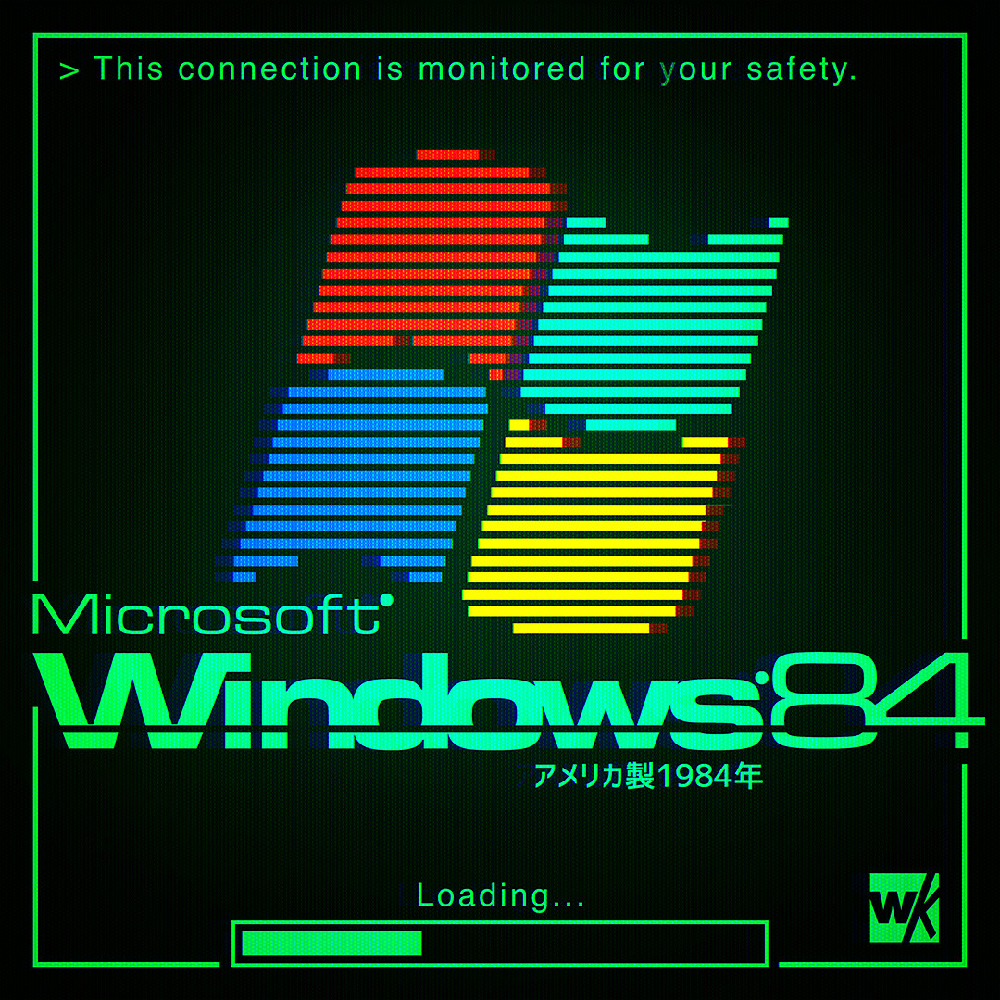

Back when the internet still felt new, websites were more than clean layouts and perfect interfaces. They were strange little digital worlds filled with blinking text, neon colors, loading screens, personal stories, and unexpected discoveries. This page is a small journey back to the time when the future looked like a glowing terminal in a cyberpunk dream. Image source: Warakami Vaporwave on Imgur.